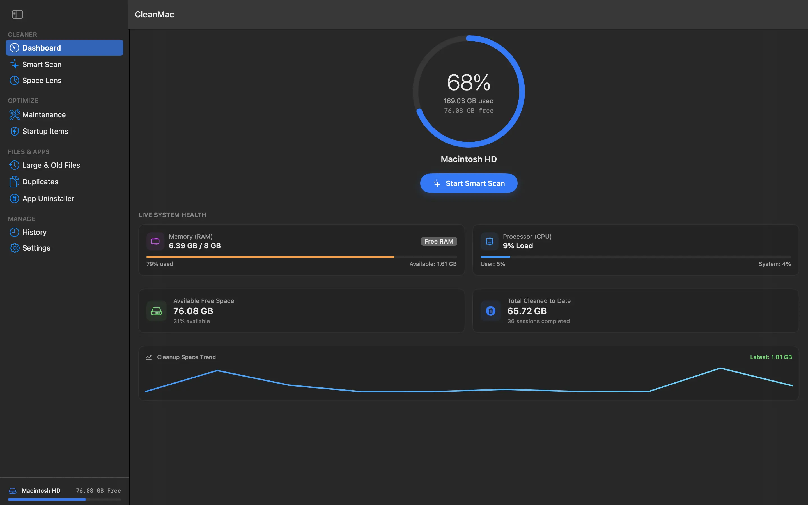
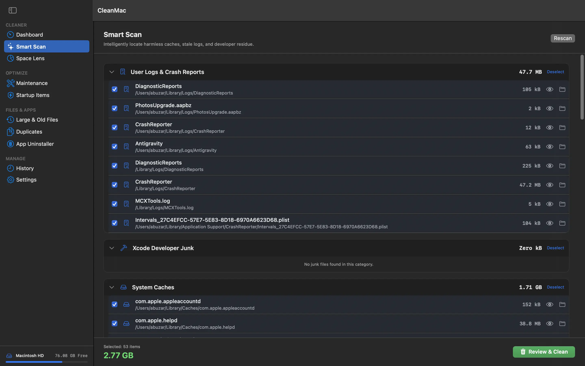
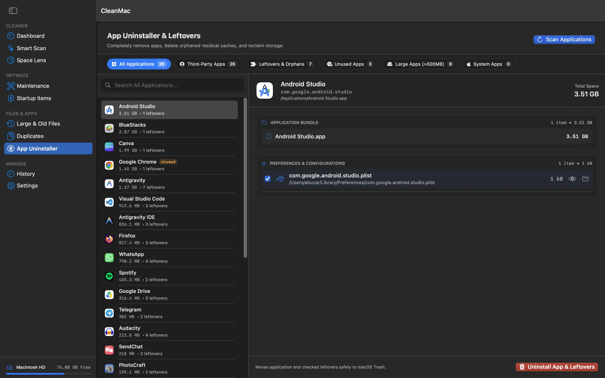
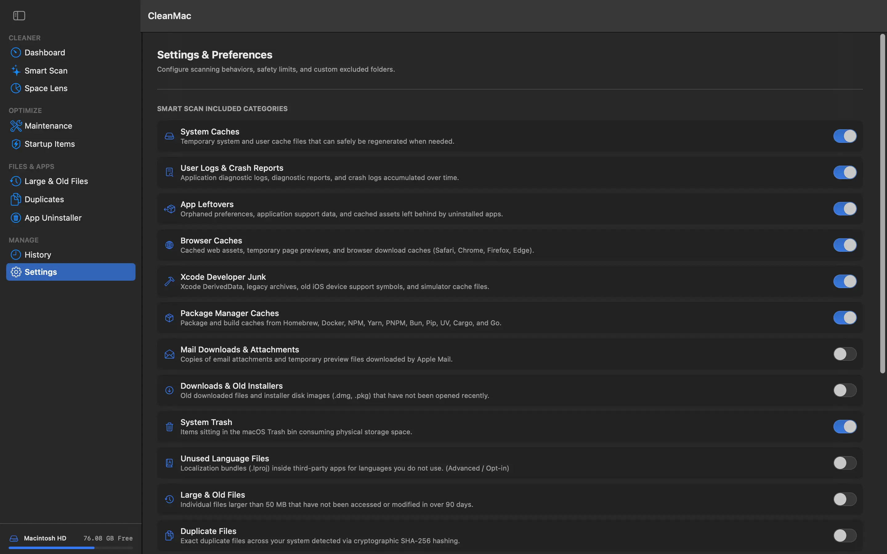

Make room for what matters with CleanMac.
A native macOS system cleaner designed to help you reclaim storage, remove app leftovers, find duplicate files, and clean up developer artifacts.
A cleaner Mac, without the clutter.
Find common sources of wasted disk space and tidy up your Mac with focused tools for system and development files.
Reclaim storage
Find files and data you can review to free up valuable space on your Mac.
Remove app leftovers
Clean up leftover files associated with uninstalled apps to help keep your system tidy.
Find duplicate files
Spot duplicate files taking up room so you can decide what to keep.
Clean developer artifacts
Clear out build caches and developer-related artifacts that accumulate during development.
Take a closer look.
Swipe horizontally to explore the CleanMac interface and its tools for keeping your Mac tidy.




Install CleanMac from releases
Download the latest packaged macOS build from GitHub Releases and start reclaiming disk space in seconds.
Open the GitHub Releases page and download the latest CleanMac archive or disk image.
Extract the archive if needed, then drag CleanMac.app into your Applications folder.
Allow folder or Full Disk Access when scanning system caches, app leftovers, or developer directories.
If macOS warns that the app is unsigned on first launch, click Done, then open System Settings > Privacy & Security and choose Open Anyway.
Built in the open. Private by design.
Visit the project repository to learn more, inspect the source, and follow development on GitHub.